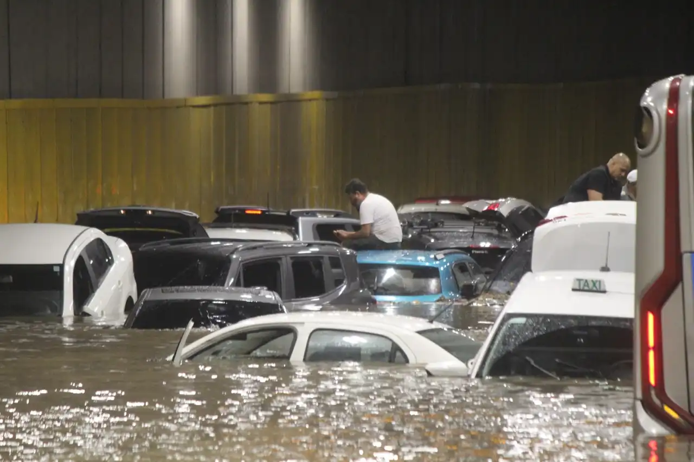

Monitoramento de Alagamentos
Um projeto para acompanhar o nível da água em garagens e túneis, ajudando a prevenir acidentes e prejuízos.
O Problema
Alagamentos em garagens podem danificar veículos. Em túneis, a água pode colocar motoristas e passageiros em perigo.
O AlertaSubsolo busca identificar o aumento da água antes que a situação se torne mais grave.

Tecnologia Utilizada
O protótipo utiliza Arduino Uno R3 e sensores para medir o nível da água.
Também temos um programa em Python para registrar medições, consultar históricos e verificar situações de risco.
Nossos Objetivos
Avisar moradores sobre riscos em garagens e alertar motoristas antes de entrarem em túneis com possibilidade de alagamento.
Público-alvo
Moradores de condomínios, motoristas, administradores de estacionamentos e responsáveis pela segurança de vias subterrâneas.
Benefícios
O monitoramento pode ajudar a identificar situações perigosas com antecedência e evitar danos aos veículos.
Em situações críticas, os avisos podem orientar as pessoas a evitar áreas alagadas.
Monitoramento de Garagens
O sistema acompanha o nível da água e pode avisar os moradores antes que o alagamento se agrave.
Nível da água
8,5 cm
Altura configurada: 20 cm
Status da garagem
ALERTA
Água acima do nível normal.
ATENÇÃO, MORADORES!
Risco de alagamento na garagem.
Considere retirar seu veículo com antecedência, somente se houver condições seguras.
Monitoramento de Túneis
O sistema também poderá alertar motoristas sobre possíveis alagamentos em túneis e passagens subterrâneas.
Nível da água
15 cm
Altura de referência: 20 cm
Status do túnel
CRÍTICO
Risco de alagamento.
ATENÇÃO, MOTORISTAS!
NÃO ENTRE NO TÚNEL
RISCO CRÍTICO DE ALAGAMENTO
Os valores apresentados são apenas exemplos para demonstrar o funcionamento do projeto.